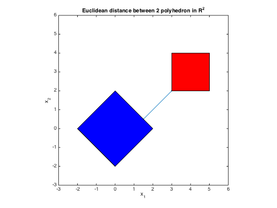

% Section 8.2.1, Boyd & Vandenberghe "Convex Optimization" % Joelle Skaf - 10/09/05 % (a figure is generated) % % Given two polyhedra C = {x | A1*x <= b1} and D = {x | A2*x <= b2}, the % distance between them is the optimal value of the problem: % minimize || x - y ||_2 % s.t. A1*x <= b1 % A2*y <= b2 % Note: here x is in R^2 % Input data randn('seed',0); n = 2; m = 2*n; A1 = randn(m,n); b1 = randn(m,1); A2 = randn(m,n); b2 = randn(m,1); fprintf(1,'Computing the distance between the 2 polyhedra...'); % Solution via CVX cvx_begin variables x(n) y(n) minimize (norm(x - y)) norm(x,1) <= 2; norm(y-[4;3],inf) <=1; cvx_end fprintf(1,'Done! \n'); % Displaying results disp('------------------------------------------------------------------'); disp('The distance between the 2 polyhedra C and D is: ' ); disp(['dist(C,D) = ' num2str(cvx_optval)]); disp('The optimal points are: ') disp('x = '); disp(x); disp('y = '); disp(y); %Plotting figure; fill([-2; 0; 2; 0],[0;2;0;-2],'b', [3;5;5;3],[2;2;4;4],'r') axis([-3 6 -3 6]) axis square hold on; plot(x(1),x(2),'k.') plot(y(1),y(2),'k.') plot([x(1) y(1)],[x(2) y(2)]) title('Euclidean distance between 2 polyhedron in R^2'); xlabel('x_1'); ylabel('x_2');
Computing the distance between the 2 polyhedra...
Calling SDPT3 4.0: 15 variables, 5 equality constraints
------------------------------------------------------------
num. of constraints = 5
dim. of socp var = 11, num. of socp blk = 5
dim. of linear var = 4
*******************************************************************
SDPT3: Infeasible path-following algorithms
*******************************************************************
version predcorr gam expon scale_data
NT 1 0.000 1 0
it pstep dstep pinfeas dinfeas gap prim-obj dual-obj cputime
-------------------------------------------------------------------
0|0.000|0.000|5.1e+00|1.0e+01|4.4e+02| 3.169873e+00 0.000000e+00| 0:0:00| chol 1 1
1|0.634|0.435|1.9e+00|5.9e+00|1.9e+02| 6.002037e+00 -7.087759e+00| 0:0:00| chol 1 1
2|0.989|1.000|2.2e-02|1.0e-02|2.8e+01| 6.724918e+00 -1.970669e+01| 0:0:00| chol 1 1
3|0.989|0.850|2.3e-04|6.7e-03|4.1e+00| 4.911024e+00 8.498487e-01| 0:0:00| chol 1 1
4|0.710|0.705|6.7e-05|2.1e-03|2.1e+00| 3.145473e+00 1.045623e+00| 0:0:00| chol 1 1
5|0.979|1.000|1.4e-06|2.3e-05|5.3e-01| 2.358883e+00 1.829442e+00| 0:0:00| chol 1 1
6|0.977|0.976|3.2e-08|1.8e-06|1.3e-02| 2.127551e+00 2.114536e+00| 0:0:00| chol 1 1
7|0.988|0.986|3.1e-10|1.3e-07|1.6e-04| 2.121394e+00 2.121230e+00| 0:0:00| chol 1 1
8|0.987|0.978|4.9e-12|2.9e-09|2.9e-06| 2.121321e+00 2.121318e+00| 0:0:00| chol 1 1
9|1.000|0.990|9.7e-14|2.9e-11|1.5e-07| 2.121320e+00 2.121320e+00| 0:0:00| chol 1 1
10|1.000|0.995|1.6e-16|1.2e-12|3.4e-09| 2.121320e+00 2.121320e+00| 0:0:00|
stop: max(relative gap, infeasibilities) < 1.49e-08
-------------------------------------------------------------------
number of iterations = 10
primal objective value = 2.12132035e+00
dual objective value = 2.12132034e+00
gap := trace(XZ) = 3.40e-09
relative gap = 6.48e-10
actual relative gap = 6.47e-10
rel. primal infeas (scaled problem) = 1.59e-16
rel. dual " " " = 1.16e-12
rel. primal infeas (unscaled problem) = 0.00e+00
rel. dual " " " = 0.00e+00
norm(X), norm(y), norm(Z) = 4.2e+00, 1.6e+00, 3.1e+00
norm(A), norm(b), norm(C) = 4.9e+00, 6.6e+00, 2.0e+00
Total CPU time (secs) = 0.13
CPU time per iteration = 0.01
termination code = 0
DIMACS: 2.1e-16 0.0e+00 1.2e-12 0.0e+00 6.5e-10 6.5e-10
-------------------------------------------------------------------
------------------------------------------------------------
Status: Solved
Optimal value (cvx_optval): +2.12132
Done!
------------------------------------------------------------------
The distance between the 2 polyhedra C and D is:
dist(C,D) = 2.1213
The optimal points are:
x =
1.5000
0.5000
y =
3.0000
2.0000
